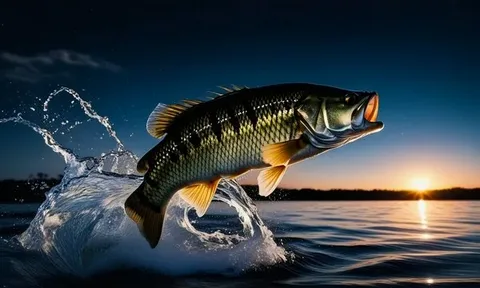

рыбка
Карась - одна из самых распространенных и живучих рыб в мире. Он может обитать в разных типах водоемов, даже при низком содержании кислорода. Караси имеют уникальную способность выживать в условиях низкого кислорода благодаря специальному органу - “лабиринту” (орган дополнительного воздушного дыхания костистых рыб).